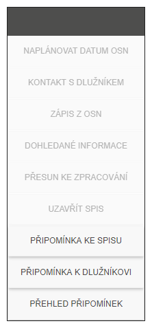
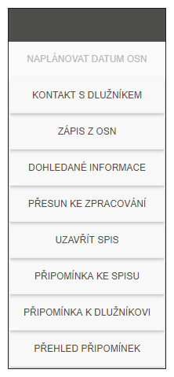
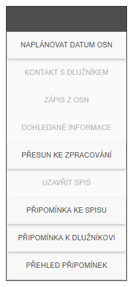

Akční tlačítka
Každá záložka má v pravé části prostor pro tzv. akční tlačítka. Jedná se o funkce, které jsou závislé na vybrání jednoho či více spisů. Každá záložka má různé akční tlačítka podle toho, jaké akce lze se spisem provádět.
Některé akce lze provést pouze pro jeden spis (např. Kontakt s dlužníkem), jiné je možné provést nad více spisy (např. Přesun ke zpracování). Popis chování konkrétních akčních tlačítek je popsán v kapitole Přehled akčních tlačítek.
Nevybraný spis |
Vybraný jeden spis |
Vybráno více spisů |
 |
 |
 |